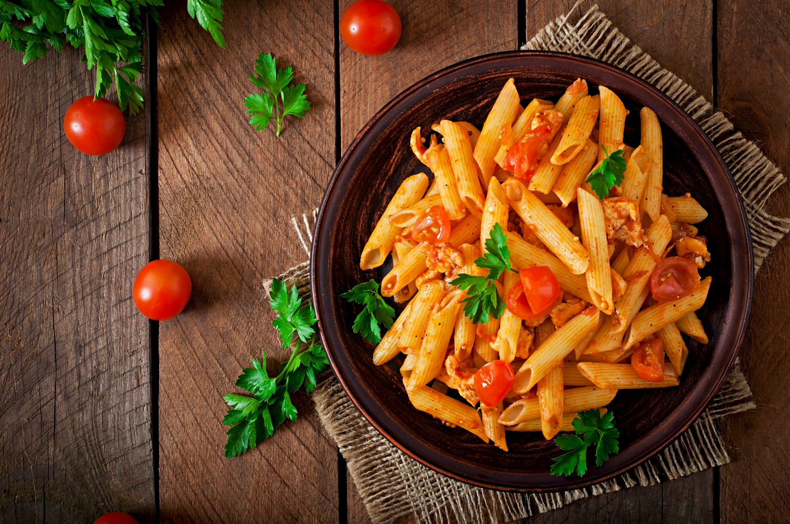

Rice and Chicken

This Pesto Pasta recipe is a quick and flavorful dish that combines al dente pasta with a vibrant and aromatic
pesto sauce. Perfect for a delicious and satisfying meal!
Ingredients:
- 8 oz (about 225g) of your favorite pasta
- 2 cups fresh basil leaves
- 1/2 cup grated Parmesan cheese
- 1/3 cup pine nuts
- 2 cloves garlic
- 1/2 cup extra-virgin olive oil
- Salt and pepper to taste
- Optional: Cherry tomatoes and additional Parmesan for garnish
Method:
Cook Pasta:
Cook the pasta according to package instructions until al dente. Drain and set aside.
Prepare Pesto:
- In a food processor, combine fresh basil, grated Parmesan, pine nuts, and garlic.
- Pulse until coarsely chopped.
- With the processor running, slowly drizzle in the olive oil until the pesto reaches a smooth consistency.
- Season with salt and pepper to taste.
Combine Pasta and Pesto:
In a large bowl, toss the cooked pasta with the freshly made pesto until well coated.
Garnish and Serve:
- Optionally, garnish with halved cherry tomatoes and additional Parmesan.
- Serve the pesto pasta hot and enjoy the burst of flavors!
Nutritional Information (per serving):
- Calories: ~400-450 kcal
- Protein: ~10g
- Carbohydrates: ~30g
- Fat: ~25g